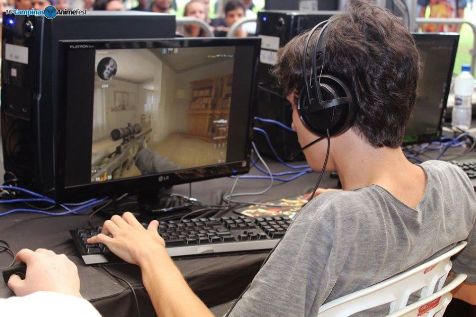

Sobre

Meu nome é Lucas Henrique Miranda, conhecido informalmente como Felipe Dylon ou Lucas "tws" Miranda, estudante de Análise e Desenvolvimento de Sistemas no Instituto Federal de Educação, Ciência e Tecnologia de São Paulo e apaixonado por desenvolvimento web.
Apaixonado pelo jogo, meu primeiro contato foi por volta de 2007. Ainda muito pequeno, jogando modos 4fun (sem competitividade), mal sabia o que estava fazendo.
Comecei a jogar o jogo seriamente 1 ano após o lançamento do CS:GO, em 2013. Em 2015 conquistei o rank mais alto no jogo (Global de Elite) e, um ano seguinte, disputei meu primeiro campeonato presencial com a OnlyFive! levando o troféu pra casa.